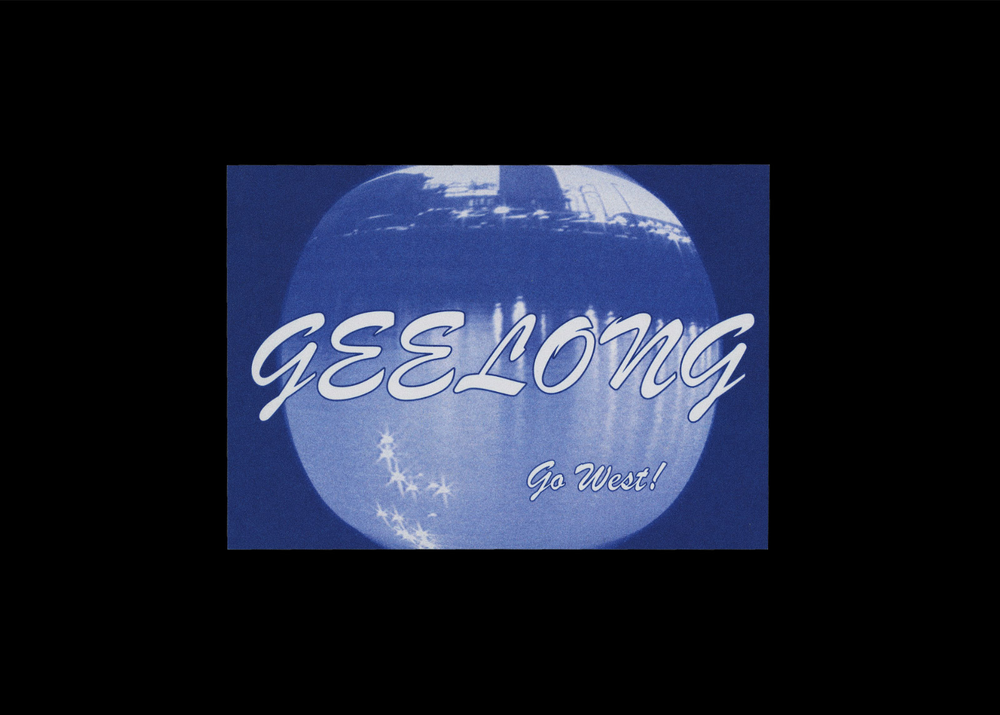
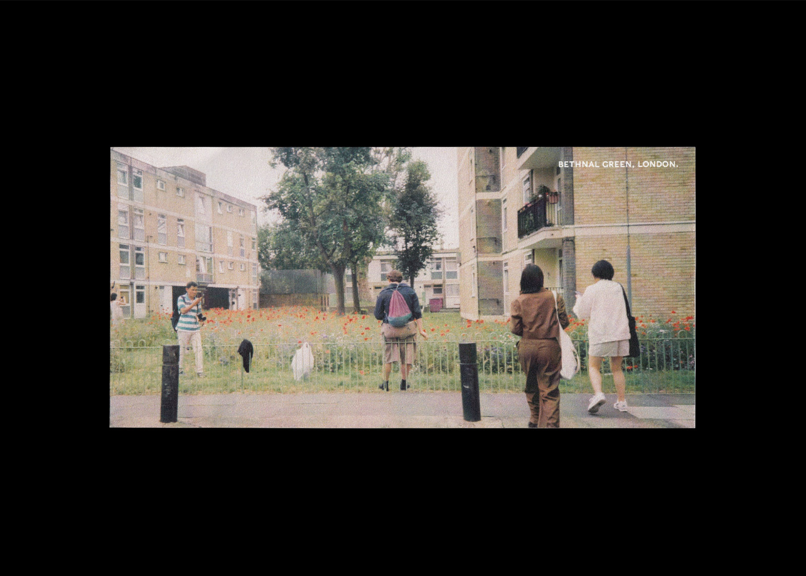

Untitled for Unlimited Limited, 720p video, 2018
Watch⇗
This project was a response to a studio brief (Unlimited Limited) which called to produce work that investigated ideas of personalisation. Untitled is centred around how the development of the Internet has created a space where opposing ideas of 'personal' and 'impersonal' exist closely. The first part of the project examines online content that applies templates or conventions in order to seem individualised for each user, but are ultimately created to be mass-consumed.
Watch⇗
This project was a response to a studio brief (Unlimited Limited) which called to produce work that investigated ideas of personalisation. Untitled is centred around how the development of the Internet has created a space where opposing ideas of 'personal' and 'impersonal' exist closely. The first part of the project examines online content that applies templates or conventions in order to seem individualised for each user, but are ultimately created to be mass-consumed.


Untitled for Unlimited Limited, 52 pages, 107.9 × 174.6 mm, 2018
The supplementary publication is a glimpse into my personal Internet usage. It is an examination of the online experience as simultaneously curated by individual users, along with being constructed by a multitude of facets including marketing, algorithms and social standards.
The supplementary publication is a glimpse into my personal Internet usage. It is an examination of the online experience as simultaneously curated by individual users, along with being constructed by a multitude of facets including marketing, algorithms and social standards.


Phở, 56 pages, 176 × 250 mm, 2018
A riso printed publication that examines the various historical and cultural contexts of phở, from its unclear origins to its recent popularisation. This includes my own observations and anecdotes of the dish.
A riso printed publication that examines the various historical and cultural contexts of phở, from its unclear origins to its recent popularisation. This includes my own observations and anecdotes of the dish.




Souvenir, series of postcards, dimensions varied, 2019–
An ongoing series of postcards based on places I have visited, using photos and video taken on location. This project revolves around capturing a sense of place and evoking specific experiences, as well as experimentation with type and image.
An ongoing series of postcards based on places I have visited, using photos and video taken on location. This project revolves around capturing a sense of place and evoking specific experiences, as well as experimentation with type and image.


Watching You Watching Me, 740 pages, 210 × 297 × 42 mm, 2018
WYWM is an exploration of book-making using conditional design and print-on-demand technology. The goal was to define a system to create a large publication within a short time span, this was done by utilising automated and digital processes. This project explores the moods and meanings of a shared gaze, using art collated from the Met Museum online collection.
WYWM is an exploration of book-making using conditional design and print-on-demand technology. The goal was to define a system to create a large publication within a short time span, this was done by utilising automated and digital processes. This project explores the moods and meanings of a shared gaze, using art collated from the Met Museum online collection.


Watching You Watching Me, microsite, 2018
Visit⇗
The promotional website extends on the idea of “the look” by directing the gaze toward the user. By putting the contents of the book online a mutation of the content occurs and it is placed into the public sphere.
Visit⇗
The promotional website extends on the idea of “the look” by directing the gaze toward the user. By putting the contents of the book online a mutation of the content occurs and it is placed into the public sphere.


Postscript, 60 pages, 176 × 250 mm, 2018
This is a speculative publication that begins with an old album full of stamps. It not only archives this collection of ephemera, but also explores personal and local histories. The course of this investigation is documented through existing material, photographs and words.
This is a speculative publication that begins with an old album full of stamps. It not only archives this collection of ephemera, but also explores personal and local histories. The course of this investigation is documented through existing material, photographs and words.


This Page Was Intentionally Left Blank, 74 pages, 210 × 297 mm, 2019, with Leitu Letia
This document explores various and meandering topics including: failed projects, relinquishing creative control to others, adaptation in order to create better work and what can be learnt from other fields. It is the result of discussion, workshopping and distraction across the span of three months.
This document explores various and meandering topics including: failed projects, relinquishing creative control to others, adaptation in order to create better work and what can be learnt from other fields. It is the result of discussion, workshopping and distraction across the span of three months.


Colour Diary, 64 pages, 176 × 250 mm, 2018
Part sketchbook, retrospective journal and colour swatch compilation, this publication collects fragments of a trip to Japan and South Korea.
Part sketchbook, retrospective journal and colour swatch compilation, this publication collects fragments of a trip to Japan and South Korea.